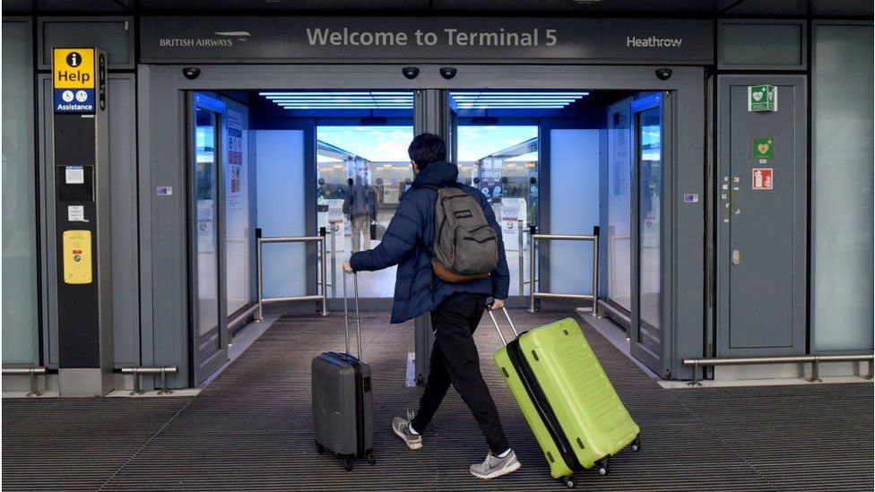

Covid testing expanded to more workplaces in England
Workplace Covid testing is being offered to more companies in England, for staff who cannot work from home during lockdown, the government says.
Businesses with more than 50 employees are now able to access lateral flow tests, which can produce results in less than 30 minutes.
Previously only firms with more than 250 staff qualified for testing.
Health Secretary Matt Hancock urged businesses and employees to take up the offer to "stop this virus spreading".
Covid: Minister rules out vaccine passports in UKQueen did not block legislation, Buckingham Palace saysUK weather: Storm Darcy leads to heavy snow and iceMyanmar coup: Police use water cannon as thousands strike
Covid: Two arrested after police find 50 at Liverpool gymRoyal Shakespeare Company to stage virtual reality showLondon violence: Two dead and 14 injured in spate of weekend stabbings'Kitesurfer' dies on Walberswick beach in freezing storm conditions
Cheng Lei: Australian journalist arrested on China spying chargesIran nuclear deal: US sanctions will not be lifted for talks, says BidenTesco tells chancellor to hit online rivals with sales taxAmazon: The unstoppable rise of the internet giant
The government has ruled out plans to issue so-called "vaccine passports" to enable people who have had the jab against coronavirus to travel abroad.
The Greek prime minister has said he would welcome British holidaymakers if they could prove they have been vaccinated.
Vaccine minister Nadhim Zahawi told the BBC's Andrew Marr Show that people could get evidence from their GP.
Labour says vaccine passports may be necessary.
The possibility of giving people "vaccine passports" to allow a return to international travel is being debated in the UK and elsewhere.
Former UK prime minister Tony Blair and Greek leader Kyriakos Mitsotakis are among those calling for their introduction.
Mr Zahawi had previously said that the government was "looking at the technology" to create vaccine passports, leading to accusations from critics that civil liberties would be infringed.
But speaking on the Marr show, Mr Zahawi insisted that was not the plan.
He said there were several reasons why vaccine passports would not be introduced, not least because the vaccine was not mandatory in the UK.
"That's not how we do things. We do them by consent," he said.
Mr Zahawi said vaccine passports would be "discriminatory" and it wasn't clear what impact they would have on transmission of the virus.
He said people could talk to their doctor if they needed written evidence to travel.
"Of course you have the evidence that you have been vaccinated held by your GP and if other countries require you to show proof of that evidence then that is up to those countries," he said.
The shadow business secretary, Ed Miliband, said vaccine passports "may be necessary" but he was more concerned with getting a comprehensive quarantine programme in place for arrivals in to the UK.
Mr Miliband added: "We should be open to this but there are complications to do this vaccine passport. Is it just for international travel? Is it for as you go about your business in your society?"
He said "We are five or six weeks on from the South African variant being discovered.
"We still don't have a quarantine system in place. We still don't have a plan for a comprehensive quarantine system, so let's proceed a step at a time, and of course, look at the vaccine passport - but let's get the quarantine right and let's get the rollout right too."
Claims the Queen blocked government legislation in the 1970s are "simply incorrect", Buckingham Palace says.
Documents published by the Guardian suggest the monarch's personal lawyers successfully lobbied ministers to change a draft law in order to conceal her private wealth.
The papers were unearthed as part of an investigation into a process known as Queen's consent.
Queen's consent is always granted where requested, the palace said.
Queen's consent is a long-established convention where the Queen is asked by Parliament to provide consent for the debating of bills "which would affect the prerogative or interests of the Crown", according to the Royal Family's website.
This process is separate to Royal Assent, where the monarch formally approves to a bill passed by Parliament for it to become law.
The government memos, found in the National Archives, date back to 1973.
They show that the Queen, concerned that new legislation might force her to reveal her private holdings in companies, despatched lawyers to argue her case with the then Department of Trade and Industry.
A revision to the draft law subsequently enabled her as a head of state to sidestep the new regulations.
The Guardian suggests that early sight of the draft legislation, under the powers of Queen's consent, gave the monarch an unrivalled opportunity to influence the legislation to her advantage.
A Buckingham Palace spokesman said: "Queen's consent is a parliamentary process, with the role of sovereign purely formal. Consent is always granted by the monarch where requested by government. Any assertion that the sovereign has blocked legislation is simply incorrect.
"Whether Queen's consent is required is decided by parliament, independently from the royal household, in matters that would affect Crown interests, including personal property and personal interests of the monarch.
"If consent is required, draft legislation is, by convention, put to the sovereign to grant solely on advice of ministers and as a matter of public record."
Heavy snow and ice has brought disruption to parts of the UK, with coronavirus vaccination centres and schools shutting in some areas.
Severe amber warnings for snow have been issued for London and south-east England, as well as Nottinghamshire, Sheffield and into Lincolnshire.
Police have warned people not to travel, with long delays expected.
In London and the South East, around 5cm-10cm (2in-4in) of snow is set to fall on Monday.
There could also be as much as 15cm in parts of the East Midlands and Yorkshire and Humber, particularly over the Lincolnshire Wolds, with a few lighter flurries elsewhere in the UK, BBC Weather forecasters said.
Less severe yellow warnings for snow and ice have been issued for large parts of England, Scotland and Northern Ireland.
The Met Office said it was "bitterly cold" due to Storm Darcy's strong easterly winds, with temperatures in parts of the UK around freezing.
The AA said "treacherous driving conditions" had already caused "numerous" accidents.
National Rail has told train passengers that services across the country are likely to be affected by the conditions and said it may be necessary to close some routes.
Southern Rail announced service cancellations in south-east London, while networks in Kent and Essex have closed train lines.
The conditions have led to some vaccination centres being closed, including several in Essex and Suffolk, as well as in Surrey.
And a number of schools have been closed across the south-east of England and Lincolnshire.
In Suffolk, a man who is thought to have been kitesurfing died on Sunday after being found on a beach in stormy conditions.
Emergency services were called after reports of a person in the North Sea off Walberswick and the man was later found on the shore by members of the public. He died at the scene.
BBC Weather forecaster Nick Miller said it was a "very cold week to come" with day temperatures close to freezing, and overnight frost making it feel "colder still" with "significant windchill".
He said there were "plenty of snow showers out there to start the week, especially in eastern areas of the UK".
In the south east of England, eastern England, the Midlands and the North East, there is the greatest prospect of "significant" falls of snow and disruption, he added. Some areas will get "shower after shower, with snow building up".
However, the severe conditions brought by Storm Darcy are not expected to be as widespread as 2018's Beast from the East, forecasters say.
Police in Myanmar's capital Nay Pyi Taw have used water cannon on workers conducting a nationwide strike against a military coup.
Thousands are taking part in a third day of street protests, calling for the release of elected leader Aung San Suu Kyi and for democracy to be restored.
State TV has warned protesters that action will be taken if they threaten public safety or the "rule of law".
It comes a day after Myanmar saw its largest protest in more than a decade.
Last week the military seized power after claiming without evidence that an earlier election was fraudulent.
They also declared a year-long state of emergency in Myanmar, also known as Burma, and power has been handed over to commander-in-chief Min Aung Hlaing.
Ms Suu Kyi and senior leaders of her National League for Democracy Party (NLD), including President Win Myint, have been put under house arrest.
By Monday morning, tens of thousands of people had gathered in Nay Pyi Taw for the strike, with other cities such as Mandalay and Yangon also reporting significant numbers, according to BBC Burmese. The protesters include teachers, lawyers, bank officers and government workers.
One demonstrating doctor - who did not want to be named - told the BBC: "Today, we, professionals - especially civil servant professionals such as doctors, engineers and teachers - came out to show that we are all together in this. Our objective is the same - to make the dictatorship fall."
Online there had been calls asking workers to skip work to protest. "This is a work day, but we aren't going to work even if our salary will be cut," one protester, 28-year-old garment factory worker, Hnin Thazin, told news agency AFP.
Another protester, Hnin Hayman Soe, told the BBC she had joined the protest alongside her children, nieces and nephews. "We can see many young people can't accept the military junta. We can even see teenagers here," she said.
A few injuries have been reported, but no violence.
However, a water cannon was activated in Nay Pyi Taw to disperse crowds. A video appears to show protesters rubbing their eyes and helping one another after being soaked.
Kyaw Zeyar Oo, who took the video, told the BBC that two vehicles had sprayed protesters with "no prior warning", while "the crowd was peacefully protesting in front of [the police]".
He added that by Monday afternoon, the situation was "totally calm" as crowds continued to gather, but the water-cannon vehicles were still present.
Over the weekend, the country saw its largest protests since the so-called Saffron Revolution in 2007, when thousands of monks rose up against the military regime.
Two people have been arrested after police raided a Liverpool gym breaking lockdown restrictions with more than 50 people inside.
Officers went to Prophecy Performance Centre in Gaskill Road, Speke on Sunday afternoon after a tip-off.
Gym users were initially stopped from leaving to try to stop them being identified, Merseyside Police said.
A 24-year-old man and a 33-year-old woman were held on suspicion of false imprisonment and 52 people were fined.
Gyms have been forced to close during the latest national coronavirus lockdown and police have cracked down on those defying the rules.
Deputy Chief Constable Serena Kennedy said: "By continuing to operate, the owners of this gym were putting themselves and their customers at risk.
"While we know that this pandemic has been really tough for businesses that have been forced to close, it is only by adhering to the rules that we will be able to put a stop to this pandemic and hopefully see a return to normality more quickly."
The site was also found to be breaking fire safety rules as all of the fire doors were padlocked shut.
Ten cars parked illegally outside the gym received parking fines.
The Royal Shakespeare Company is to stage a live online performance using virtual reality technology.
The performance, titled Dream and based on William Shakespeare's play A Midsummer Night's Dream, had been scheduled to be staged in the spring.
But the theatre, like many others, has faced disruption due to coronavirus.
It will go ahead in a virtual forest, with motion sensors on the actors allowing them to interact with their surroundings and the audience at home.
The RSC, which is based in Stratford-upon-Avon in Warwickshire, said the show uses the latest gaming and theatre technology and an interactive score that responds to the actors' movement during the show.
Through their tablet, mobile or the show's website, audiences will be able to directly influence the live performance from wherever they are in the world, it said.
The audience will be led by Puck, played by EM Williams, who takes them from the real world into the digital world, the RSC said, and can guide Puck through the forest at key points in the play.
The production is performed with seven actors in a specially created motion capture space at The Guildhall in Portsmouth, supported by a team from the University of Portsmouth.
RSC artistic director Gregory Doran said: "An audience member sitting at home influencing the live performance from wherever they are - that's exciting.
"It's not a replacement to being in the space with the performers but it opens up new opportunities.
"Shakespeare was our greatest storyteller and it's brilliant that we get the opportunity to use one of his plays to discover what could be possible for live performance."
The production is being staged in collaboration with the arts event Manchester International Festival, art collective Marshmallow Laser Feast and the Philharmonia Orchestra.
It will run from Friday 12 March to Saturday 20 March.
Audiences can choose to buy a £10 ticket, to take part in the interactive element, or to view the performance for free. Tickets can be booked online from 12:00 GMT on Monday.
Two people have been killed and at least 14 others injured in an "abhorrent" spate of separate stabbings across London this weekend.
Since Friday night police have dealt with stabbings in Coulsdon, Streatham, Chislehurst, Pimlico and Harrow.
Separate murder investigations were launched in Croydon and Kilburn after two 22-year-olds were stabbed to death just 24 hours apart.
Extra police officers have been deployed across capital, the Met said.
London's weekend of violence began on Friday night in Croydon when one 22-year-old man was stabbed to death inside a block of flats on Wisbeach Road, Thornton Heath.
The victim has not yet been named by police who said another male was taken to hospital after being injured in the same attack.
On Saturday night Sven Badzak, also 22, was fatally injured after he and a friend fled a group of males in Kilburn.
Mr Badzak was taken to hospital where he later died, Det Ch Insp Darren Jones said.
He added: "At this early stage we believe Sven and his friend became involved in an altercation with a group of males.
"As this group chased the pair, Sven and his friend became separated. Sven fell to the ground and was attacked by a number of the group.
"His friend was also attacked but managed to seek sanctuary in a shop. However, he remains critically ill in hospital."
There have been no arrests in either murder investigation.
Elsewhere in London, police dealt with stabbings in other parts of Croydon as well as Streatham, Chislehurst, Coulsdon and Pimlico.
All attacks are unconnected and there have been arrests in only two of the Croydon stabbings.
A 20-year-old man who was stabbed in Hindes Road, Harrow, on Sunday afternoon remains in a life-threatening condition, the Met Police said.
All the other victims did not have serious injuries, detectives have said.
A man who police believe had been kitesurfing has died after being found on a beach in storm conditions.
Emergency services were called at 15:20 GMT on Sunday after people became concerned about someone in the North Sea off Walberswick in Suffolk.
A man, in his 50s, was found on the shore by members of the public. He died at the scene.
Suffolk Police said there were not thought to be any suspicious circumstances.
The force said HM Coastguard and the ambulance service also attended and provided some medical attention, but the man could not be saved.
It has asked anybody with any information to contact them.
The Met Office had an amber warning for snow in place until 12:00 on Monday across much of the east of England as Storm Darcy continued.
Australian journalist Cheng Lei, after months of detention in China, has been formally arrested on charges of supplying state secrets overseas.
Prior to her detention, the Chinese-born Australian had been a TV presenter for Chinese state media outlet CGTN.
Chinese authorities confirmed her arrest on Monday, adding that her legal rights would be guaranteed.
Ms Cheng was detained in August and charged last Friday, Australian officials had earlier said.
At a press briefing on Monday, Chinese ministry spokesman Wang Wenbin said he hoped Australia would "not interfere with China's handling of this case", according to news agency Reuters.
Canberra has repeatedly raised concerns with Beijing over Ms Cheng's detention.
"We expect basic standards of justice, procedural fairness and humane treatment to be met, in accordance with international norms," said Australia's foreign affairs minister, Marise Payne.
"Our thoughts are with Ms Cheng and her family during this difficult period."
Ms Cheng had worked in Beijing for the last few years. Many of her family, including her two young children, live in Australia.
In August, she suddenly disappeared from television and couldn't be contacted by friends or relatives. Her employer, CGTN - the English-language channel of the state broadcaster - also wiped its websites of Ms Cheng's profile page and work.
China eventually announced she was being held on national security grounds under "residential surveillance" in an unknown location.
Her family said they had no idea why she had been detained.
"I don't think she would have done anything to harm national security in any way intentionally," her niece Louisa Wen told the Australian Broadcasting Corporation."
"We don't know if she's just been caught up in something that she herself didn't realise."
Her family said Ms Cheng had been interrogated on several occasions and was being kept in a cell. Her health had deteriorated, they added.
Australia said its representatives had been able to visit her once a month - in line with the bilateral consular agreement with China.
US President Joe Biden says he will not lift economic sanctions against Iran until it complies with the terms agreed under a 2015 nuclear deal.
Mr Biden was speaking in a CBS News interview aired on Sunday.
But Iran's Supreme Leader, Ayatollah Ali Khamenei, said Tehran would only return to compliance if the US first lifted all economic sanctions.
The 2015 deal sought to limit Iran's nuclear programme, with sanctions eased in return.
Former President Donald Trump, however, withdrew the US from the deal in 2018 and re-imposed sanctions, leading Iran to roll back on a number of its commitments.
Iran, which says its nuclear programme is peaceful, has been increasing its stockpile of enriched uranium. Enriched uranium can be used to make reactor fuel, but also nuclear bombs.
Under the terms of the 2015 nuclear deal - an agreement reached between Iran, the US, China, France, Germany, Russia and the UK - Tehran agreed to limit its uranium enrichment and allow international inspectors to access sites and facilities.
In return, sanctions imposed on Tehran were lifted.
But Mr Trump withdrew the US from the deal, known as the Joint Comprehensive Plan of Action (JCPOA), in an effort to force Iran to negotiate a new accord, and reinstated economic sanctions.
Mr Trump wanted to place indefinite curbs on Tehran's nuclear programme and also halt its development of ballistic missiles.
Iran refused. In July 2019, it breached the 3.67% cap on uranium enrichment and in January this year announced it had resumed enriching uranium to 20% purity. Weapons-grade uranium is 90% purity.
In a short clip of the interview published before the full broadcast at 16:00 EST (21:00 GMT) on Sunday, Mr Biden was asked if he would halt economic sanctions to bring Tehran back to the negotiating table, and he replied: "No."
Meanwhile, Ali Khamenei said that for Iran to return to its commitments under the deal, the US must first "abolish all sanctions", Iranian state TV reported on Sunday.
"We will assess, and if we see that they have acted faithfully in this regard, we will return to our commitment," he said, adding: "It is the irreversible and final decision and all Iranian officials have consensus over it."
Tesco has called for a 1% sales tax to be levied on online competitors, including Amazon.
Boss Ken Murphy has also joined with Morrisons, Asda and Waterstones to ask Chancellor Rishi Sunak for a "level playing field" on tax.
They say the current system puts retailers with large estates at a disadvantage to online firms.
Retailers have not had to pay property-based business rates since the start of the pandemic.
However, the tax is due to restart in April.
Supermarkets including Tesco and Morrisons have handed back business rates relief worth £1.8bn to the government.
They had been criticised for taking government support during the pandemic while announcing dividend payments to shareholders.
The chief executives of 18 companies and groups have written to the chancellor warning that a return to the old system "will hamper the recovery of the retail sector post-pandemic, potentially putting thousands of jobs at risk".
Business rates are calculated by looking at a property's rateable value and multiplying it by a tax rate set by the government. A new tax rate comes into effect at the start of each financial year on 1 April.
According to figures from the Office for National Statistics (ONS), full-year retail sales at physical shops for the 12 months ending 31 December 2020 fell 10.3% from £318.5bn in 2019 to £285.8bn.
The group of 18 bosses stops short of asking for an online sales tax, but Tesco has called for a 1% levy.
Last week, Amazon was criticised for paying less in business rates than British bricks-and-mortar retailers.
The online retail giant's financial results revealed that UK sales for 2020 totalled $26.5bn (£19.3bn) - a 51% jump from $17.5bn in 2019.
Amazon's overall business rates bill for 2020-21 is estimated by researchers to be £71.5m - just 0.37% of its retail sales.
Amazon insists that it pays its tax and has created thousands of jobs in the UK.
Retail adviser Altus Group says that bricks-and-mortar retailers would have paid £8.25bn in business rates in 2020, had they not been given a tax holiday due to the pandemic.
It says the figure was calculated using rateable values, multiplied by the 2020 tax rate. The £8.25bn figure amounts to 2.9% of total retail sales, which is much higher than what Amazon pays.
For instance, Arcadia - which owned Topshop, Burton and Dorothy Perkins at the time - would have had to pay £91m in business rates on its 444 stores in 2020, had there not been a tax holiday, Altus Group says.
Robert Hayton, UK president of property tax at Altus Group, told the BBC that changing the business rate system would be "a good place to start" in trying to correct the imbalance between online and bricks-and-mortar retailers.
However, he added that business rates had often been reviewed in the past 20 years and nothing had changed, because the need to keep the changes fiscally neutral meant that one sector could benefit only at the expense of another.
"If some additional money can be created through something like an online sales tax, and then crucially, if that can be ring-fenced and made available to make some improvements to business rates, then I think that's a really positive outlook," he said.
Earlier this week we learned that Amazon founder Jeff Bezos will step down as chief executive of the e-commerce giant that he started in his garage nearly 30 years ago.
He will make way for Andy Jassy, currently head of Amazon's cloud computing business, to take day-to-day control.
Billionaire Mr Bezos won't entirely give up the reins, however, instead assuming the role of executive chairman.
Today, Amazon is one of the most valuable public companies on the planet, with Mr Bezos vying with Tesla's Elon Musk for the title as world's richest man.
What started as a small online book retailer has become a global phenomenon, spanning home delivery, cloud computing, advances in artificial intelligence, and the streaming of movies and sports.
And that has brought Amazon much criticism, ranging from accusations it has contributed to the decline of the High Street to complaints about working conditions in its vast warehouses.
Amazon's innovation can be clearly seen in its financial results.
In 2018, it became the world's second-ever public company to be valued at $1 trillion, after Apple, and today it has the third-highest market valuation in US, after Apple and Microsoft.
The huge success of the online giant is also evident in its revenue.
Sales for 2020 reached $386bn, up from $280bn a year earlier. Net profit almost doubled to $21bn.
Mr Bezos's success has been driven by the firm's global expansion, but mainly by expanding into a wide variety of other sectors.
Video streaming services and devices, cloud services and most recently groceries (with the acquisition of Whole Foods Market) have allowed the company to compete directly with technology giants such as Facebook, Apple, Google and Netflix.


 Claims the Queen blocked government legislation in the 1970s are "simply incorrect", Buckingham Palace says.
Claims the Queen blocked government legislation in the 1970s are "simply incorrect", Buckingham Palace says.
 Two people have been arrested after police raided a Liverpool gym breaking lockdown restrictions with more than 50 people inside.
Two people have been arrested after police raided a Liverpool gym breaking lockdown restrictions with more than 50 people inside.